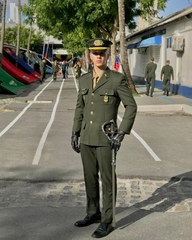
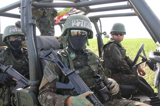

I graduated from a high school called Souza Leão. It was a time when I had plenty of opportunities to enjoy myself and do productive things, but, as I was just a typical teenager, I didn’t take advantage of it.
Even so, when I was younger, I used to be very creative and even had my own YouTube channel. That was the first time I ever created something. I made animation videos, and the content was about my favorite characters from games, anime, or movies fighting each other in random universes where they met.
Here’s a link where you can watch them:
My first youtube channel!
After high school, I went straight into the army. That was my first and most intense job experience. I joined as an inexperienced teenager with no real knowledge of the military, and by the end of the year, I was commanding a whole crew. There, I learned the true meaning of friendship, respect, leadership, and the limits of both body and mind. Honestly, it was the biggest challenge of my life so far.
 When my time in the army ended, I started preparing for university entrance exams. I studied for two years until I was accepted into UFRPE, where I am currently studying Computer Science.
While preparing for the exams, I also had to work. As an adult with responsibilities, and a wonderful girlfriend, i needed an income to maintain the life I wanted for us. I currently work as a Sales Development Representative, which has been a great opportunity to improve my communication skills and learn how to deal with different kinds of people.
Each link has a title that matches with its content.